-
To verify the functionality of transaction on staff account
14:22:05 pm / 33:02:349 Fail
To verify the functionality of transaction on staff account
06.16.2023 14:22:05 06.16.2023 14:25:07 33:02:349 · #test-id=1FailChecking Cash Withdrawal Transaction - Priority Withdrawal Limit Defined - Warn User if Limit Exceeds UnChecked - Proceed if Limit Exceeds Checked - Amount > LimitGiven user login as csm params applicationstepdefinitions.HooksClass.addScreenshot(io.cucumber.java.Scenario)screenshotAnd user update test data set id for TRS_109_01stepdefinitions.HooksClass.addScreenshot(io.cucumber.java.Scenario)screenshot And user click parameters menustepdefinitions.HooksClass.addScreenshot(io.cucumber.java.Scenario)screenshot
And user click parameters menustepdefinitions.HooksClass.addScreenshot(io.cucumber.java.Scenario)screenshot And user click system parameters submenustepdefinitions.HooksClass.addScreenshot(io.cucumber.java.Scenario)screenshot
And user click system parameters submenustepdefinitions.HooksClass.addScreenshot(io.cucumber.java.Scenario)screenshot And user click user submenustepdefinitions.HooksClass.addScreenshot(io.cucumber.java.Scenario)screenshot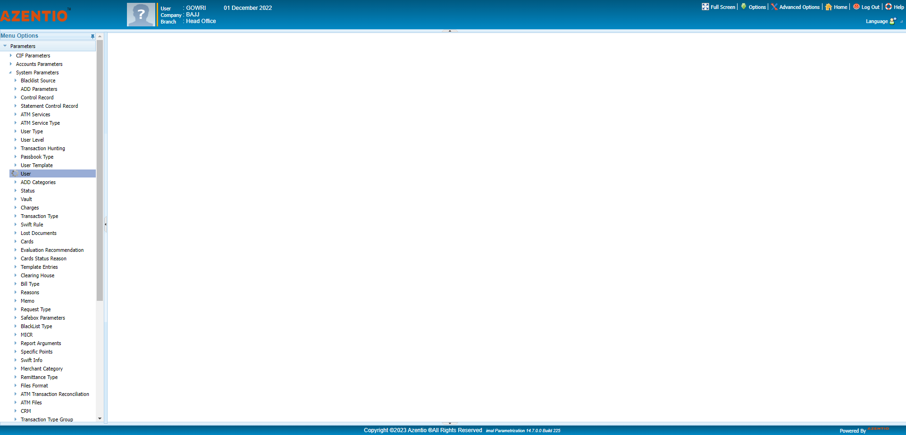And user click update after approvestepdefinitions.HooksClass.addScreenshot(io.cucumber.java.Scenario)screenshot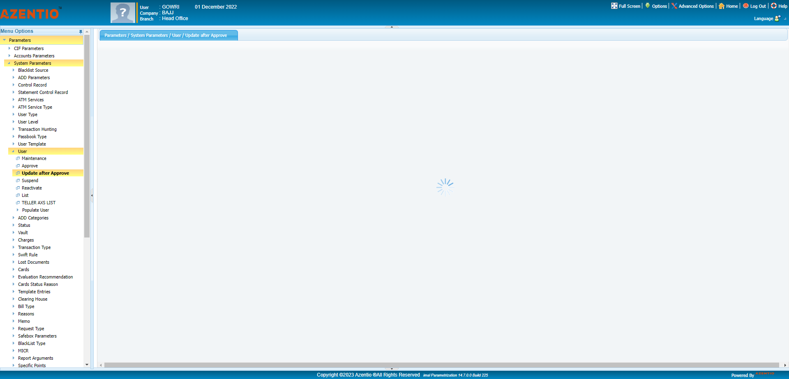And user enter the value in user idstepdefinitions.HooksClass.addScreenshot(io.cucumber.java.Scenario)screenshot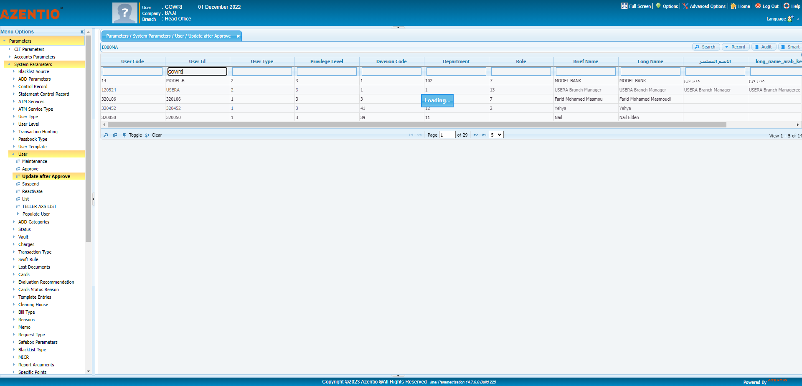And user retrieve the selected user idstepdefinitions.HooksClass.addScreenshot(io.cucumber.java.Scenario)screenshot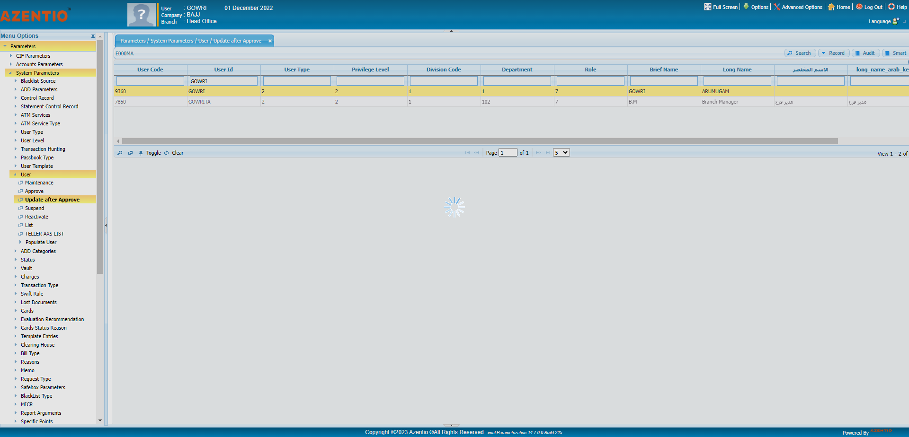Then user click priority buttonstepdefinitions.HooksClass.addScreenshot(io.cucumber.java.Scenario)screenshot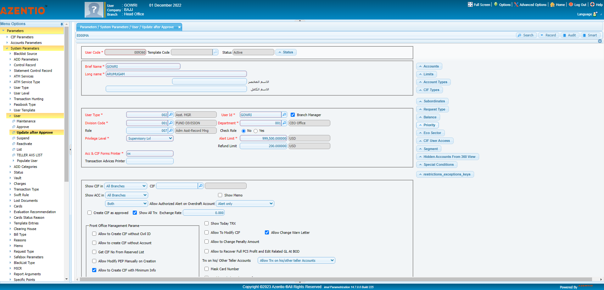And user click add icon in prioritystepdefinitions.HooksClass.addScreenshot(io.cucumber.java.Scenario)screenshot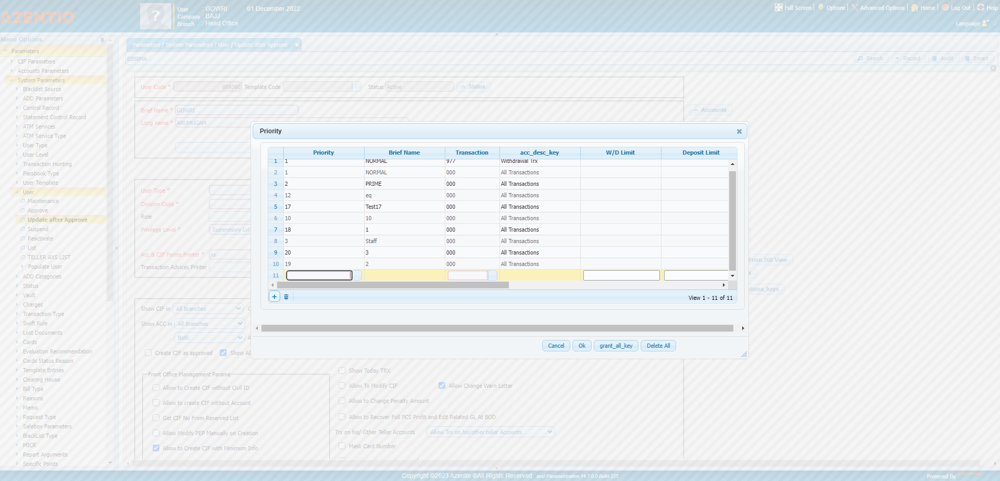And user enter priority valuestepdefinitions.HooksClass.addScreenshot(io.cucumber.java.Scenario)screenshotAnd user enter transaction value under Eco sectorstepdefinitions.HooksClass.addScreenshot(io.cucumber.java.Scenario)screenshot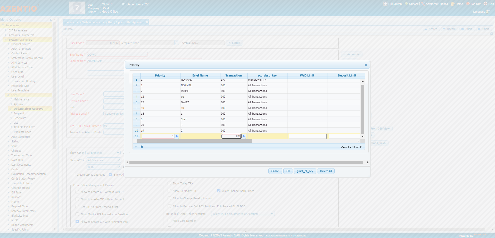And user enter withdrawal limit valuestepdefinitions.HooksClass.addScreenshot(io.cucumber.java.Scenario)screenshot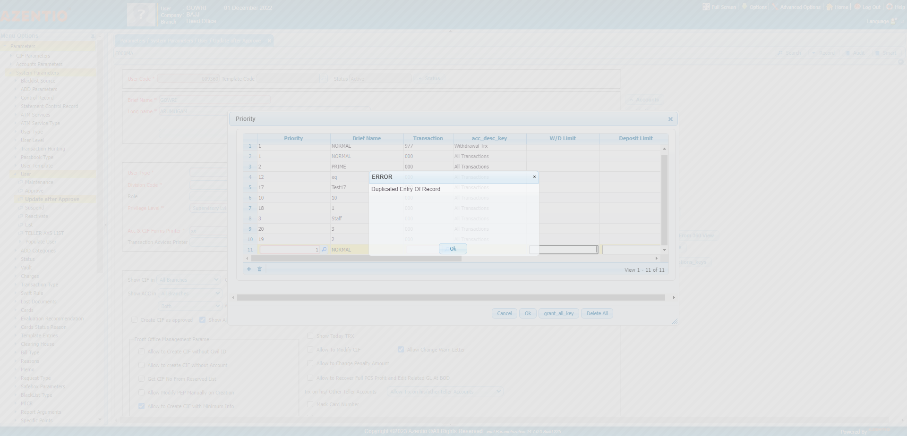Then user verify the proceed if limits exceeds flag checked under prioritystepdefinitions.HooksClass.addScreenshot(io.cucumber.java.Scenario)screenshot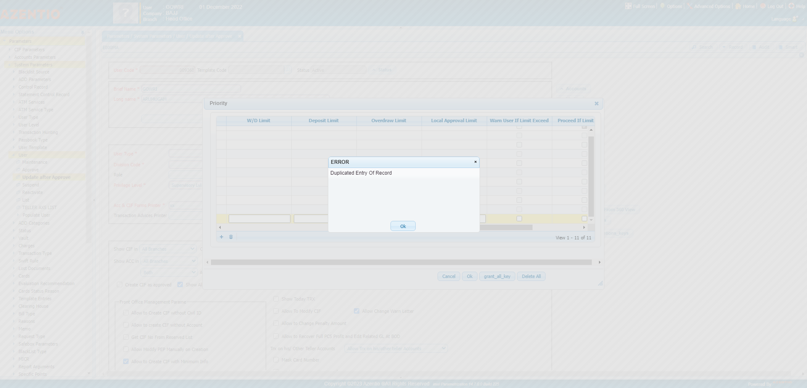And user click ok button under limitsStep skippedAnd user click update after approve buttonStep skippedAnd user click confirm ok buttonStep skippedThen user click success message ok buttonStep skippedAnd user click approve screenStep skippedAnd user enter the value in user id under approve screenStep skippedAnd user retrieve the selected user id under approve screenStep skippedThen user click approve buttonStep skippedAnd user click confirm ok buttonStep skippedThen user click success message ok buttonStep skippedFailChecking Cash Withdrawal Transaction - Priority Withdrawal Limit Defined - Warn User if Limit Exceeds UnChecked - Proceed if Limit Exceeds Checked - Amount > LimitGiven user login as csm core applicationstepdefinitions.HooksClass.addScreenshot(io.cucumber.java.Scenario)screenshot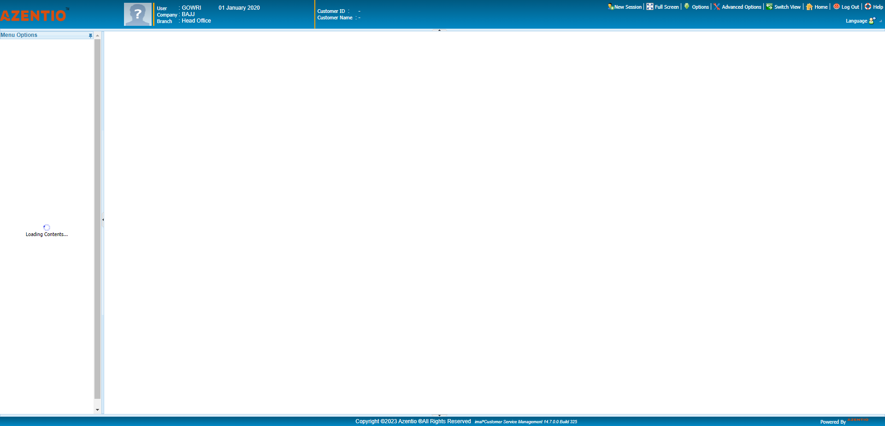And user update test data set id for TRS_109stepdefinitions.HooksClass.addScreenshot(io.cucumber.java.Scenario)screenshot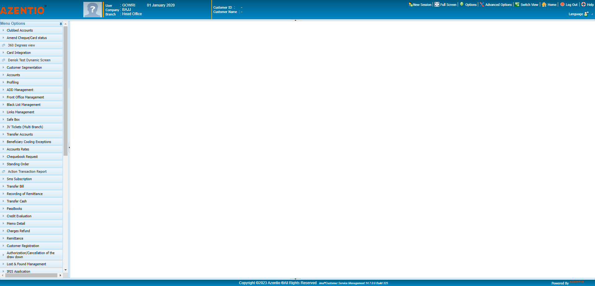And User Click on Date to Change the Current Datestepdefinitions.HooksClass.addScreenshot(io.cucumber.java.Scenario)screenshot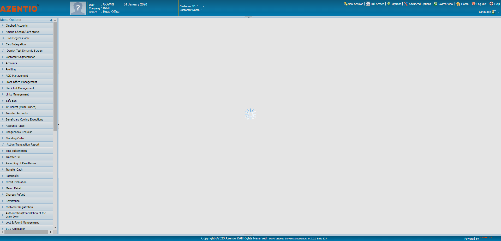And User Enter the Date in User Running Datestepdefinitions.HooksClass.addScreenshot(io.cucumber.java.Scenario)screenshot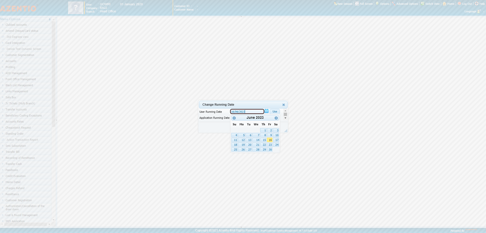And User Click on Use Button in Change Running Date Popupstepdefinitions.HooksClass.addScreenshot(io.cucumber.java.Scenario)screenshot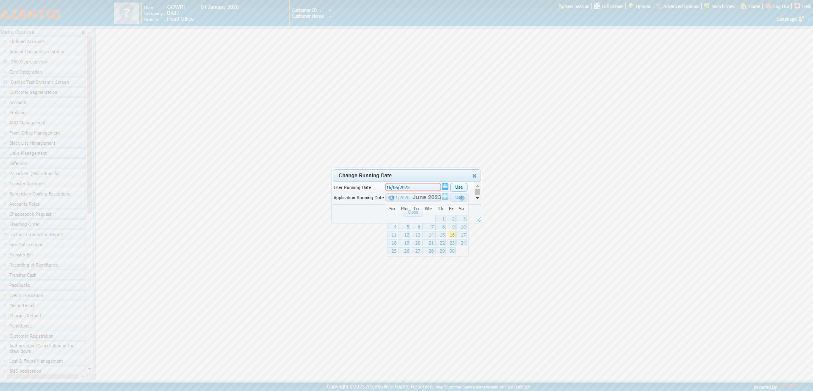And User Click Ok Button in Information PopUp menustepdefinitions.HooksClass.addScreenshot(io.cucumber.java.Scenario)screenshot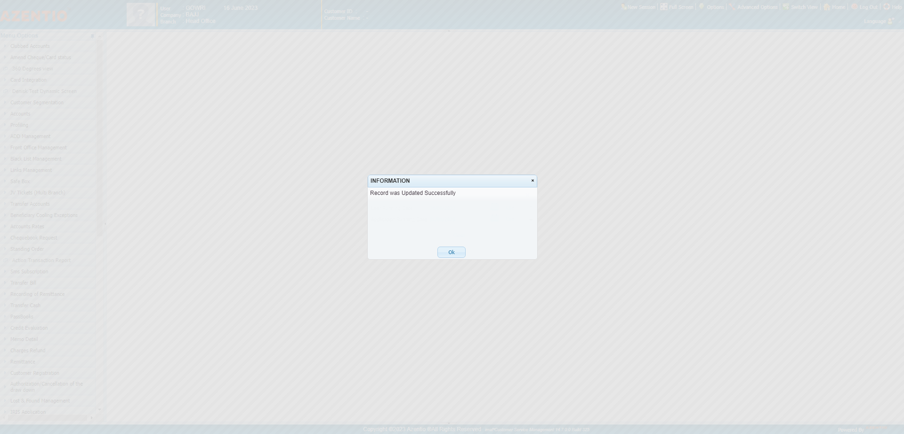And User Click on Close Button in Change Running Date Popupstepdefinitions.HooksClass.addScreenshot(io.cucumber.java.Scenario)screenshotAnd user click the transactions in menu optionsstepdefinitions.HooksClass.addScreenshot(io.cucumber.java.Scenario)screenshot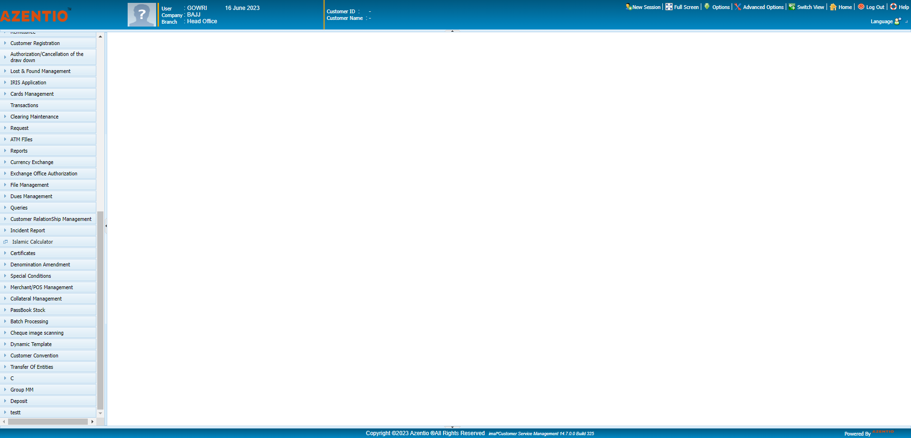And user click the maintenance in transactionsstepdefinitions.HooksClass.addScreenshot(io.cucumber.java.Scenario)screenshot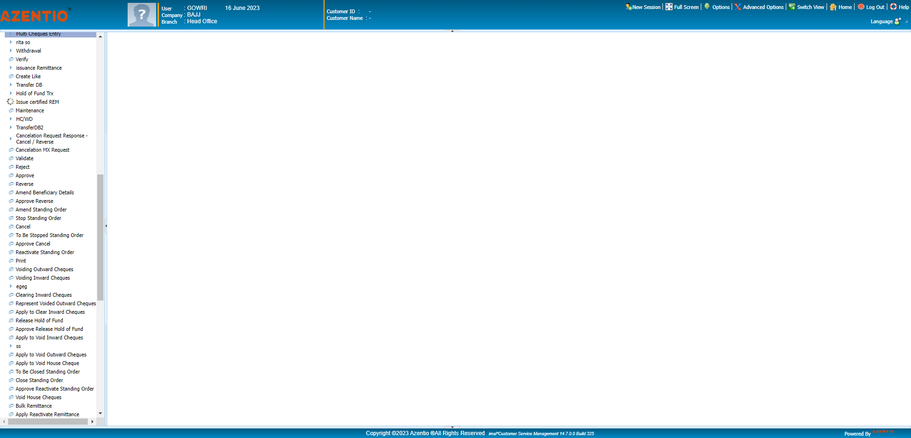And user click and enter the value in trx type under transactionsstepdefinitions.HooksClass.addScreenshot(io.cucumber.java.Scenario)screenshot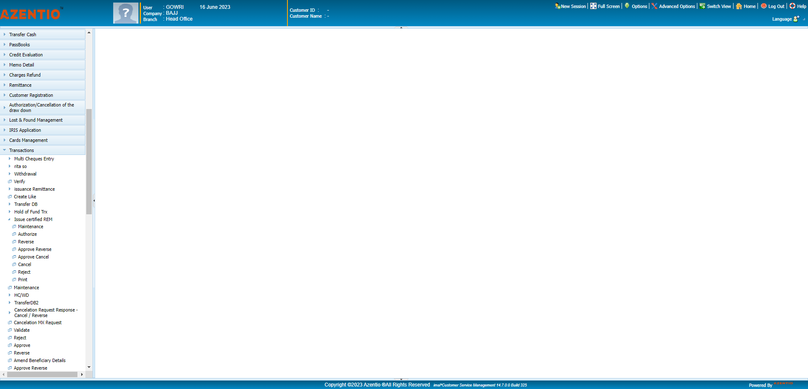And user click the transaction maintenance type iconStep skippedAnd user enter the currency value in credit account detailsStep skippedAnd user click the transaction maintenance type iconStep skippedAnd user enter the GL code in credit account detailsStep skippedAnd user click the transaction maintenance type iconStep skippedAnd user enter the CIF code in credit account detailsStep skippedAnd user click the transaction maintenance type iconStep skippedAnd user enter the serial number in credit account detailsStep skippedAnd user click the transaction maintenance type iconStep skippedAnd User Click Ok Button in Information PopUp menuStep skippedAnd user click currency field and enter the valueStep skippedAnd user click the transaction maintenance type iconStep skippedAnd user click amount field and enter the valueStep skippedAnd user check if the value is entered or notStep skippedAnd user click save button in transactions menuStep skippedAnd User Click Ok Button in Information PopUp menuStep skippedThen user navigate to approve submenuStep skippedAnd user click refresh icon in approve submenuStep skippedAnd user retrieve the created record in approve submenuStep skippedAnd user click approve button in approve submenuStep skippedThen user verify the successfully approved message popup in approve submenuStep skippedPassChecking Cash Withdrawal Transaction - Priority Withdrawal Limit Defined - Warn User if Limit Exceeds UnChecked - Proceed if Limit Exceeds Checked - Amount > LimitGiven user login as csm params applicationstepdefinitions.HooksClass.addScreenshot(io.cucumber.java.Scenario)screenshot
And user click user submenustepdefinitions.HooksClass.addScreenshot(io.cucumber.java.Scenario)screenshot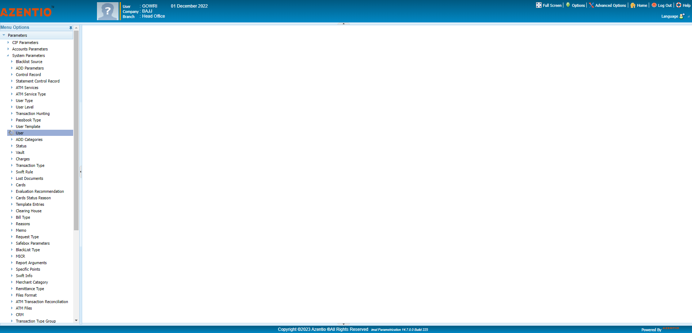And user click update after approvestepdefinitions.HooksClass.addScreenshot(io.cucumber.java.Scenario)screenshot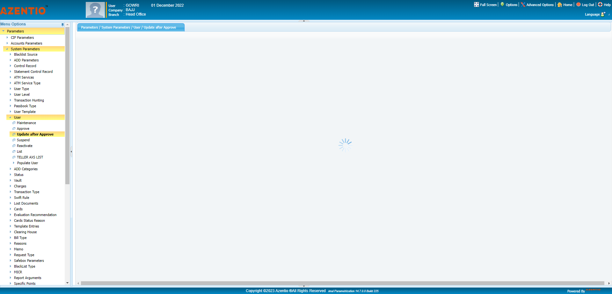And user enter the value in user idstepdefinitions.HooksClass.addScreenshot(io.cucumber.java.Scenario)screenshot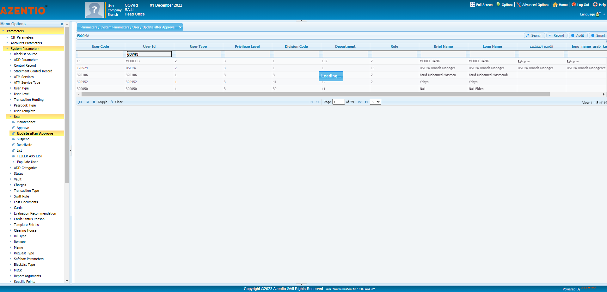And user retrieve the selected user idstepdefinitions.HooksClass.addScreenshot(io.cucumber.java.Scenario)screenshot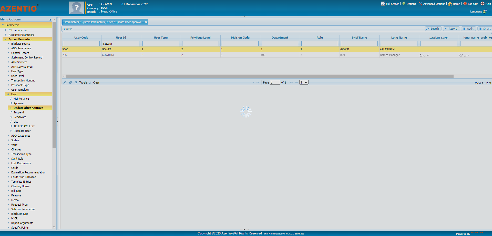Then user click priority buttonstepdefinitions.HooksClass.addScreenshot(io.cucumber.java.Scenario)screenshot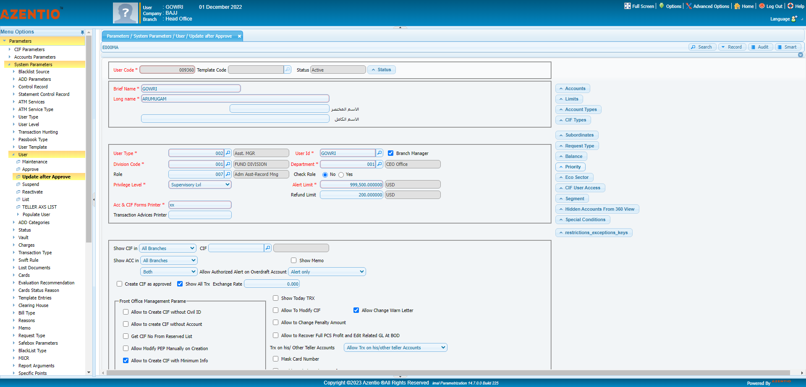And user click add icon in prioritystepdefinitions.HooksClass.addScreenshot(io.cucumber.java.Scenario)screenshot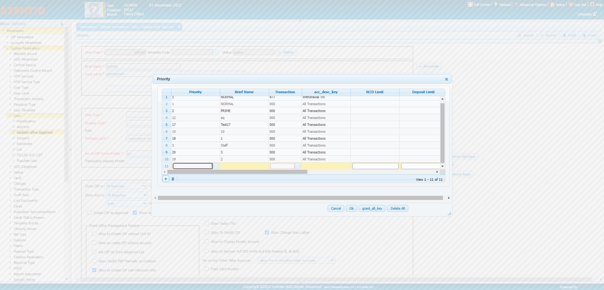And user enter priority valuestepdefinitions.HooksClass.addScreenshot(io.cucumber.java.Scenario)screenshotAnd user enter transaction value under Eco sectorstepdefinitions.HooksClass.addScreenshot(io.cucumber.java.Scenario)screenshot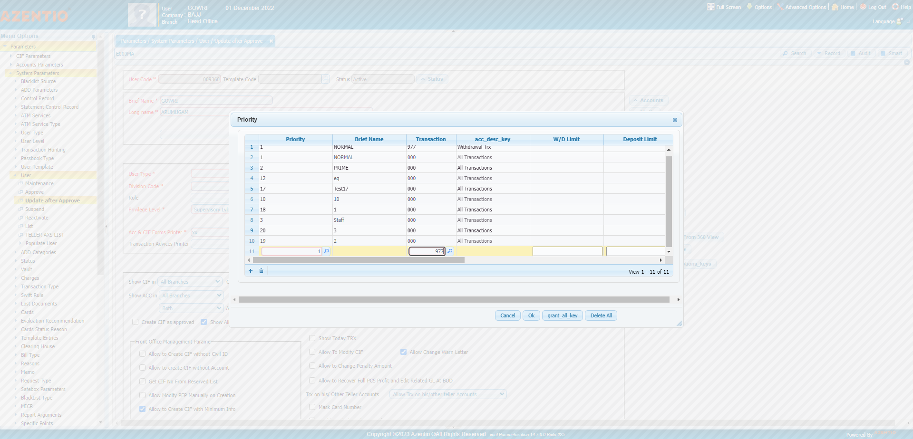And user enter withdrawal limit valuestepdefinitions.HooksClass.addScreenshot(io.cucumber.java.Scenario)screenshot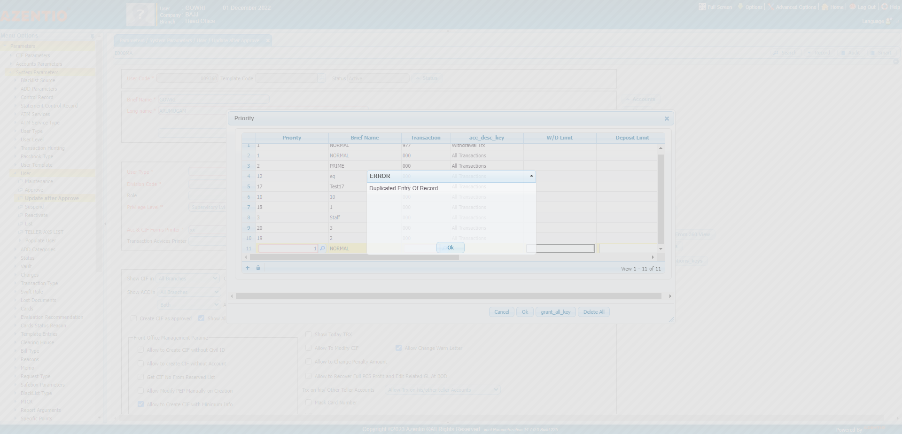Then user verify the proceed if limits exceeds flag checked under prioritystepdefinitions.HooksClass.addScreenshot(io.cucumber.java.Scenario)screenshot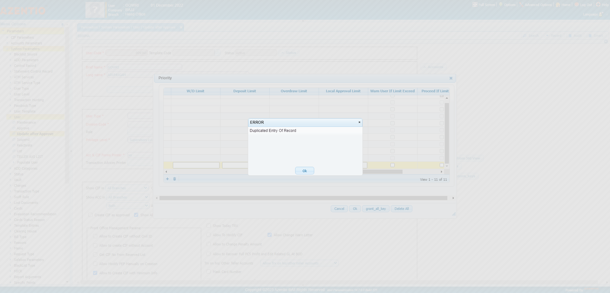And user click ok button under limitsStep skippedAnd user click update after approve buttonStep skippedAnd user click confirm ok buttonStep skippedThen user click success message ok buttonStep skippedAnd user click approve screenStep skippedAnd user enter the value in user id under approve screenStep skippedAnd user retrieve the selected user id under approve screenStep skippedThen user click approve buttonStep skippedAnd user click confirm ok buttonStep skippedThen user click success message ok buttonStep skippedFailChecking Cash Withdrawal Transaction - Priority Withdrawal Limit Defined - Warn User if Limit Exceeds UnChecked - Proceed if Limit Exceeds Checked - Amount > LimitGiven user login as csm core applicationstepdefinitions.HooksClass.addScreenshot(io.cucumber.java.Scenario)screenshot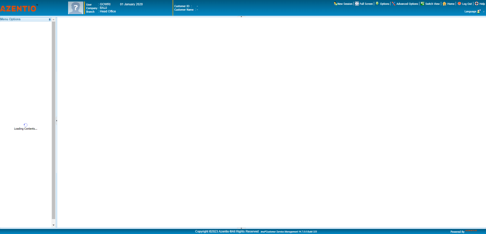And user update test data set id for TRS_109stepdefinitions.HooksClass.addScreenshot(io.cucumber.java.Scenario)screenshot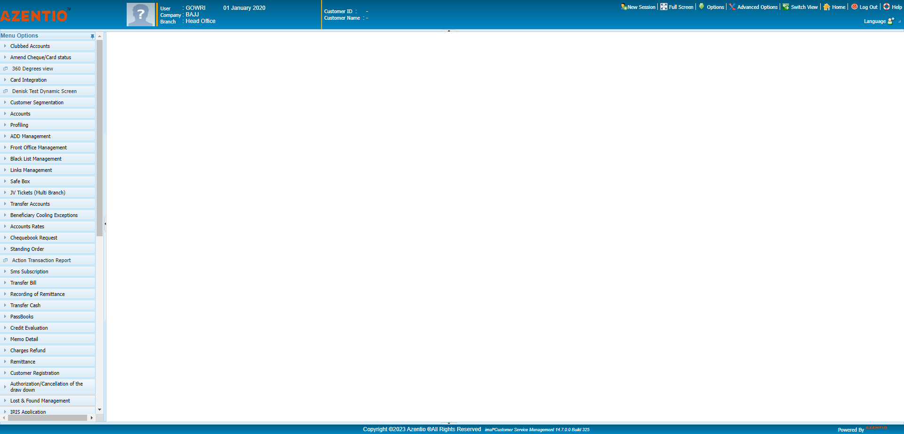And User Click on Date to Change the Current Datestepdefinitions.HooksClass.addScreenshot(io.cucumber.java.Scenario)screenshot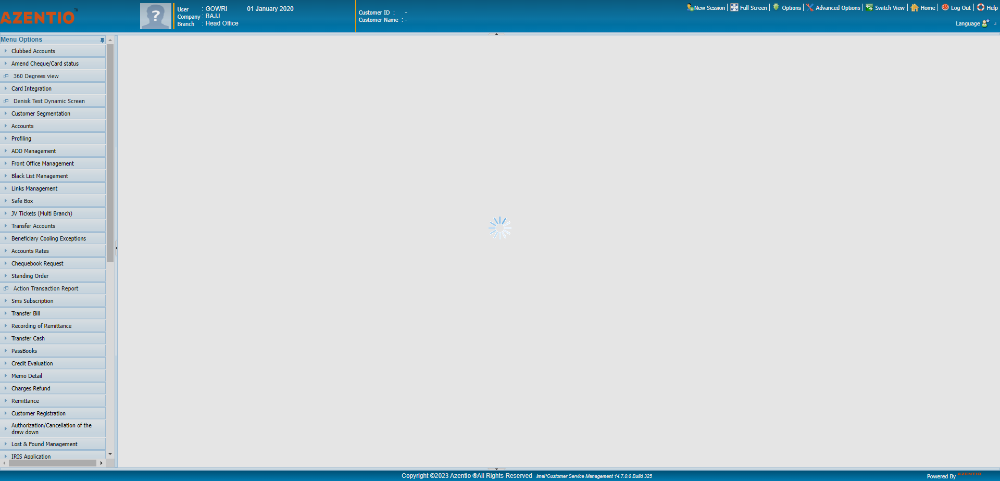And User Enter the Date in User Running Datestepdefinitions.HooksClass.addScreenshot(io.cucumber.java.Scenario)screenshot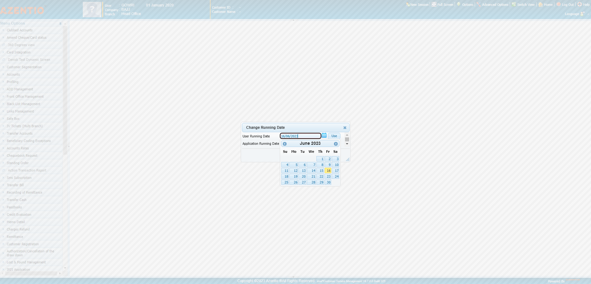And User Click on Use Button in Change Running Date Popupstepdefinitions.HooksClass.addScreenshot(io.cucumber.java.Scenario)screenshot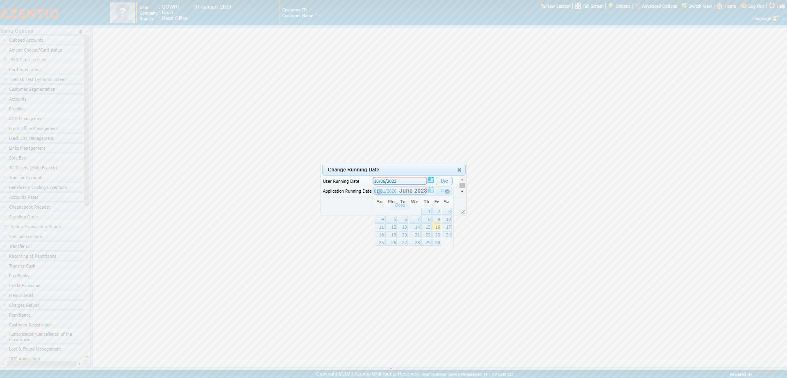And User Click Ok Button in Information PopUp menustepdefinitions.HooksClass.addScreenshot(io.cucumber.java.Scenario)screenshot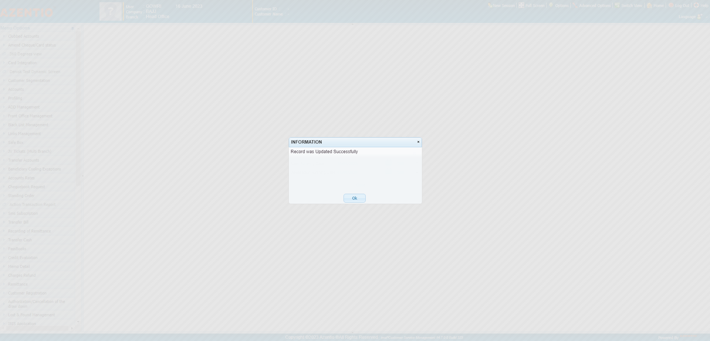And User Click on Close Button in Change Running Date Popupstepdefinitions.HooksClass.addScreenshot(io.cucumber.java.Scenario)screenshotAnd user click the transactions in menu optionsstepdefinitions.HooksClass.addScreenshot(io.cucumber.java.Scenario)screenshot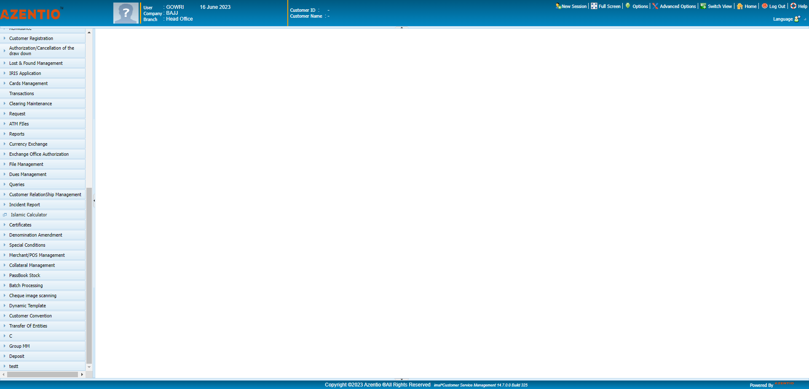And user click the maintenance in transactionsstepdefinitions.HooksClass.addScreenshot(io.cucumber.java.Scenario)screenshot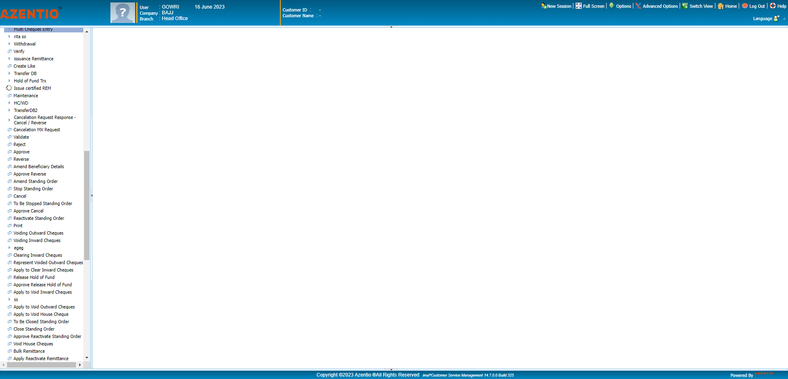And user click and enter the value in trx type under transactionsstepdefinitions.HooksClass.addScreenshot(io.cucumber.java.Scenario)screenshot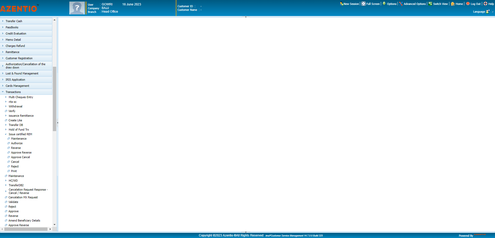And user click the transaction maintenance type iconStep skippedAnd user enter the currency value in credit account detailsStep skippedAnd user click the transaction maintenance type iconStep skippedAnd user enter the GL code in credit account detailsStep skippedAnd user click the transaction maintenance type iconStep skippedAnd user enter the CIF code in credit account detailsStep skippedAnd user click the transaction maintenance type iconStep skippedAnd user enter the serial number in credit account detailsStep skippedAnd user click the transaction maintenance type iconStep skippedAnd User Click Ok Button in Information PopUp menuStep skippedAnd user click currency field and enter the valueStep skippedAnd user click the transaction maintenance type iconStep skippedAnd user click amount field and enter the valueStep skippedAnd user check if the value is entered or notStep skippedAnd user click save button in transactions menuStep skippedAnd User Click Ok Button in Information PopUp menuStep skippedThen user navigate to approve submenuStep skippedAnd user click refresh icon in approve submenuStep skippedAnd user retrieve the created record in approve submenuStep skippedAnd user click approve button in approve submenuStep skippedThen user verify the successfully approved message popup in approve submenuStep skippedPassChecking Cash Withdrawal Transaction - Priority Withdrawal Limit Defined - Warn User if Limit Exceeds UnChecked - Proceed if Limit Exceeds Checked - Amount > LimitGiven user login as csm params applicationstepdefinitions.HooksClass.addScreenshot(io.cucumber.java.Scenario)screenshot And user update test data set id for TRS_109_02stepdefinitions.HooksClass.addScreenshot(io.cucumber.java.Scenario)screenshotAnd user click parameters menustepdefinitions.HooksClass.addScreenshot(io.cucumber.java.Scenario)screenshot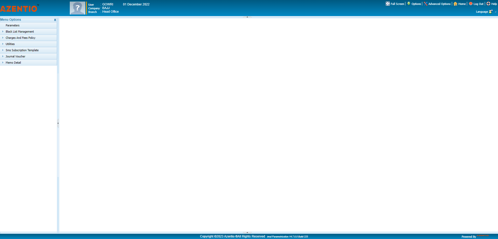And user click system parameters submenustepdefinitions.HooksClass.addScreenshot(io.cucumber.java.Scenario)screenshot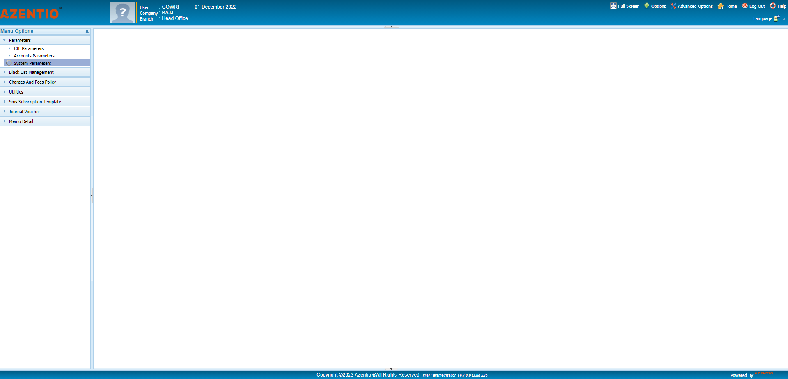And user click user submenustepdefinitions.HooksClass.addScreenshot(io.cucumber.java.Scenario)screenshotAnd user click update after approvestepdefinitions.HooksClass.addScreenshot(io.cucumber.java.Scenario)screenshot
And user update test data set id for TRS_109_02stepdefinitions.HooksClass.addScreenshot(io.cucumber.java.Scenario)screenshotAnd user click parameters menustepdefinitions.HooksClass.addScreenshot(io.cucumber.java.Scenario)screenshot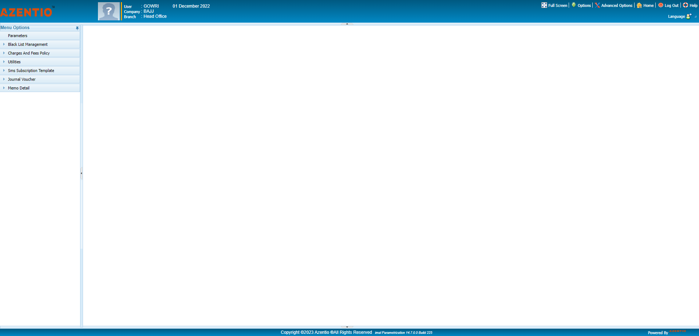And user click system parameters submenustepdefinitions.HooksClass.addScreenshot(io.cucumber.java.Scenario)screenshot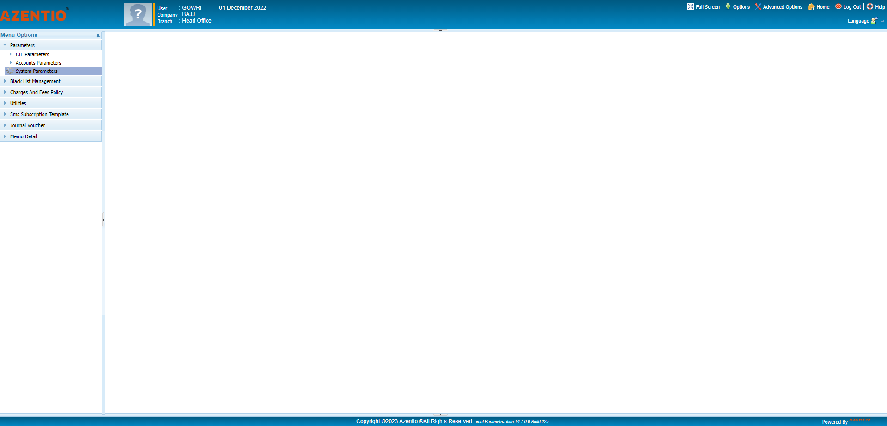And user click user submenustepdefinitions.HooksClass.addScreenshot(io.cucumber.java.Scenario)screenshotAnd user click update after approvestepdefinitions.HooksClass.addScreenshot(io.cucumber.java.Scenario)screenshot And user enter the value in user idstepdefinitions.HooksClass.addScreenshot(io.cucumber.java.Scenario)screenshot
And user enter the value in user idstepdefinitions.HooksClass.addScreenshot(io.cucumber.java.Scenario)screenshot And user retrieve the selected user idstepdefinitions.HooksClass.addScreenshot(io.cucumber.java.Scenario)screenshot
And user retrieve the selected user idstepdefinitions.HooksClass.addScreenshot(io.cucumber.java.Scenario)screenshot Then user click Eco sector buttonstepdefinitions.HooksClass.addScreenshot(io.cucumber.java.Scenario)screenshotAnd user select the row for delete the recordstepdefinitions.HooksClass.addScreenshot(io.cucumber.java.Scenario)screenshot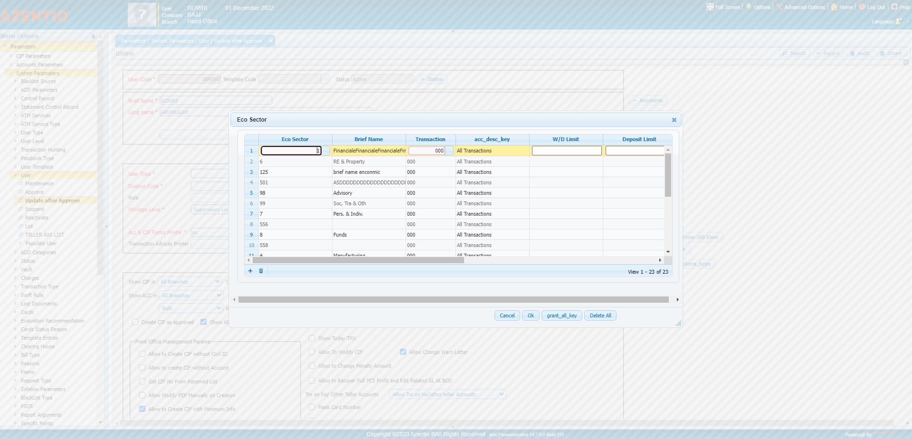And user delete the inserted record under Eco sectorstepdefinitions.HooksClass.addScreenshot(io.cucumber.java.Scenario)screenshot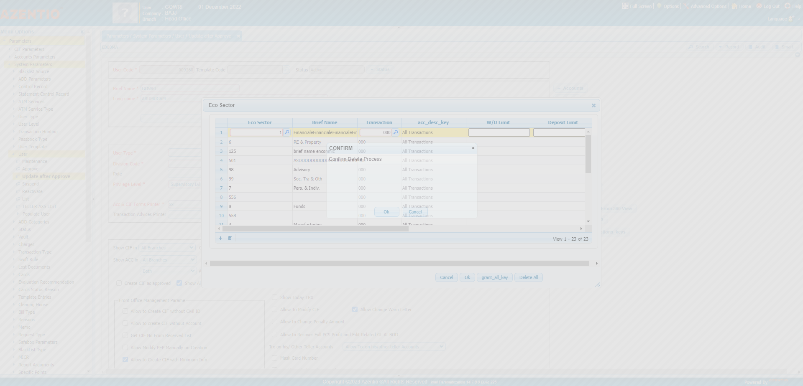And user click confirm ok buttonstepdefinitions.HooksClass.addScreenshot(io.cucumber.java.Scenario)screenshot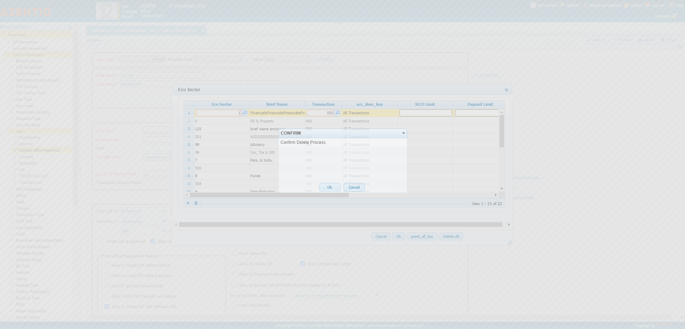And user click ok button under limitsstepdefinitions.HooksClass.addScreenshot(io.cucumber.java.Scenario)screenshotAnd user click update after approve buttonstepdefinitions.HooksClass.addScreenshot(io.cucumber.java.Scenario)screenshot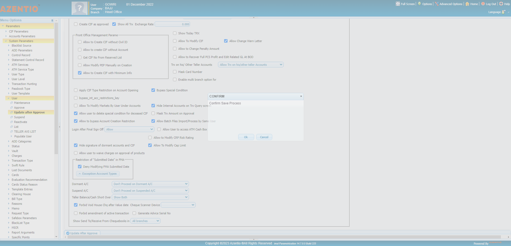And user click confirm ok buttonstepdefinitions.HooksClass.addScreenshot(io.cucumber.java.Scenario)screenshot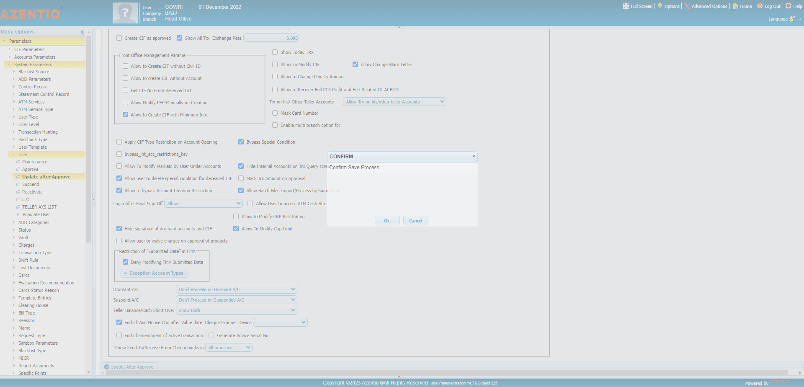Then user click success message ok buttonstepdefinitions.HooksClass.addScreenshot(io.cucumber.java.Scenario)screenshot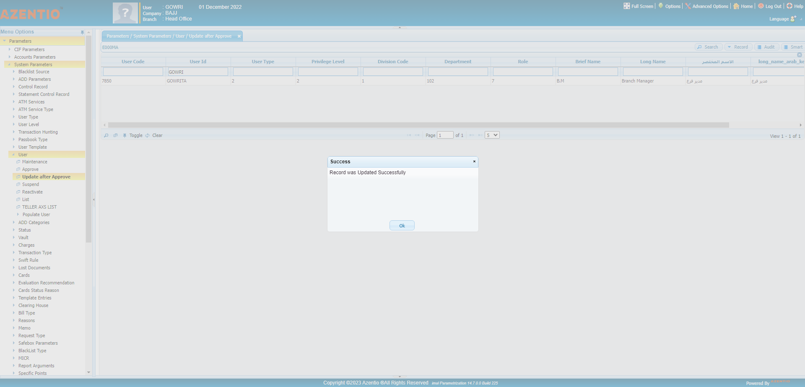And user click approve screenstepdefinitions.HooksClass.addScreenshot(io.cucumber.java.Scenario)screenshot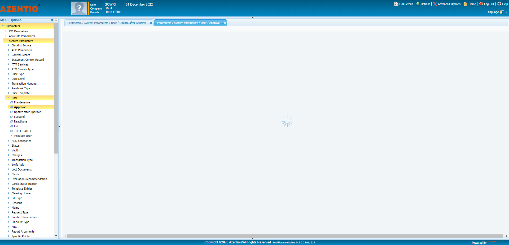And user enter the value in user id under approve screenstepdefinitions.HooksClass.addScreenshot(io.cucumber.java.Scenario)screenshot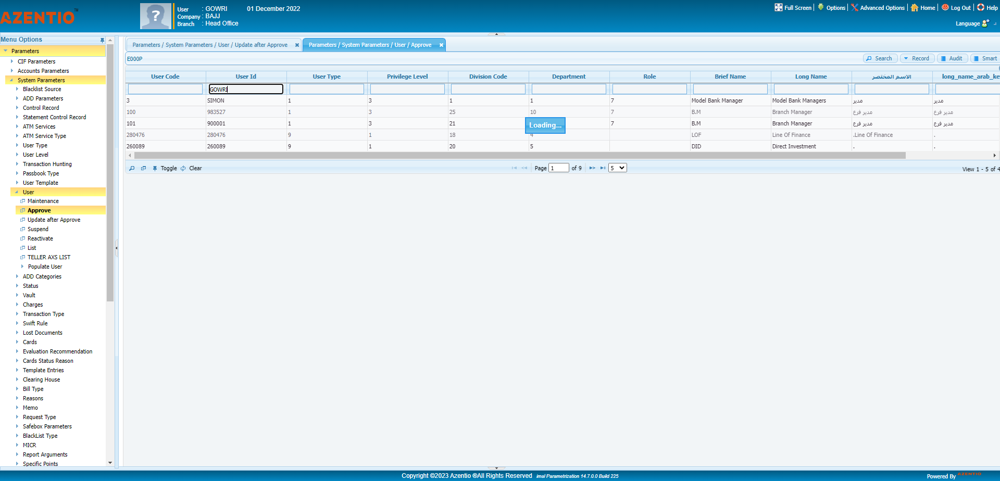And user retrieve the selected user id under approve screenstepdefinitions.HooksClass.addScreenshot(io.cucumber.java.Scenario)screenshot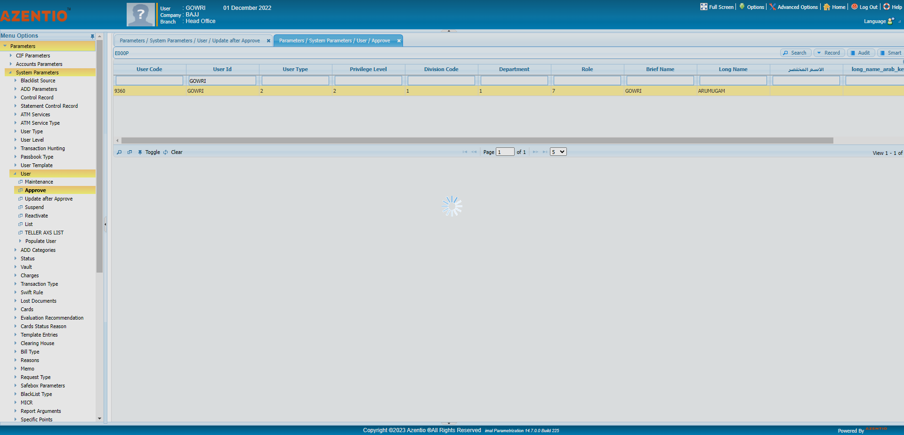Then user click approve buttonstepdefinitions.HooksClass.addScreenshot(io.cucumber.java.Scenario)screenshot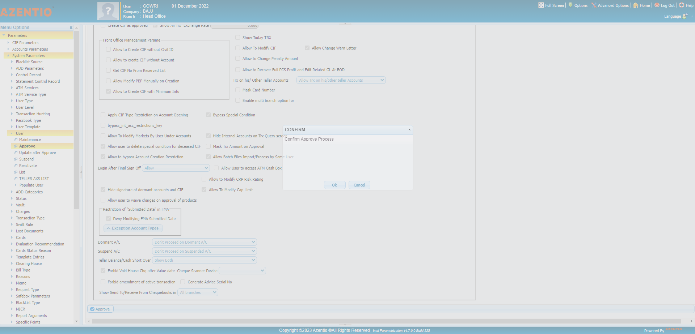And user click confirm ok buttonstepdefinitions.HooksClass.addScreenshot(io.cucumber.java.Scenario)screenshotThen user click success message ok buttonstepdefinitions.HooksClass.addScreenshot(io.cucumber.java.Scenario)screenshot
Then user click Eco sector buttonstepdefinitions.HooksClass.addScreenshot(io.cucumber.java.Scenario)screenshotAnd user select the row for delete the recordstepdefinitions.HooksClass.addScreenshot(io.cucumber.java.Scenario)screenshotAnd user delete the inserted record under Eco sectorstepdefinitions.HooksClass.addScreenshot(io.cucumber.java.Scenario)screenshotAnd user click confirm ok buttonstepdefinitions.HooksClass.addScreenshot(io.cucumber.java.Scenario)screenshotAnd user click ok button under limitsstepdefinitions.HooksClass.addScreenshot(io.cucumber.java.Scenario)screenshotAnd user click update after approve buttonstepdefinitions.HooksClass.addScreenshot(io.cucumber.java.Scenario)screenshotAnd user click confirm ok buttonstepdefinitions.HooksClass.addScreenshot(io.cucumber.java.Scenario)screenshotThen user click success message ok buttonstepdefinitions.HooksClass.addScreenshot(io.cucumber.java.Scenario)screenshotAnd user click approve screenstepdefinitions.HooksClass.addScreenshot(io.cucumber.java.Scenario)screenshotAnd user enter the value in user id under approve screenstepdefinitions.HooksClass.addScreenshot(io.cucumber.java.Scenario)screenshotAnd user retrieve the selected user id under approve screenstepdefinitions.HooksClass.addScreenshot(io.cucumber.java.Scenario)screenshotThen user click approve buttonstepdefinitions.HooksClass.addScreenshot(io.cucumber.java.Scenario)screenshotAnd user click confirm ok buttonstepdefinitions.HooksClass.addScreenshot(io.cucumber.java.Scenario)screenshotThen user click success message ok buttonstepdefinitions.HooksClass.addScreenshot(io.cucumber.java.Scenario)screenshot
Started
Jun 16, 2023 02:22:03 pm
Ended
Jun 16, 2023 02:25:07 pm
Features Passed
0
Features Failed
1
Features
Scenarios
Steps
Timeline
Tags
| Name | Passed | Failed | Skipped | Others | Passed % |
|---|---|---|---|---|---|
| @TRS_109_01 | 0 | 1 | 0 | 0 | 0% |
| @TRS_109_02 | 1 | 0 | 0 | 0 | 100% |
| @TRS_109 | 0 | 1 | 0 | 0 | 0% |
System/Environment
| Name | Value |
|---|---|
| version | 10 |
| os | windows |
-
@TRS_109_01
1 tests
@TRS_109_01
1 failedStatus Timestamp TestName Fail 14:22:05 pm Checking Cash Withdrawal Transaction - Priority Withdrawal Limit Defined - Warn User if Limit Exceeds UnChecked - Proceed if Limit Exceeds Checked - Amount > Limit To verify the functionality of transaction on staff account.Checking Cash Withdrawal Transaction - Priority Withdrawal Limit Defined - Warn User if Limit Exceeds UnChecked - Proceed if Limit Exceeds Checked - Amount > Limit -
@TRS_109_02
1 tests
@TRS_109_02
1 passedStatus Timestamp TestName Pass 14:24:22 pm Checking Cash Withdrawal Transaction - Priority Withdrawal Limit Defined - Warn User if Limit Exceeds UnChecked - Proceed if Limit Exceeds Checked - Amount > Limit To verify the functionality of transaction on staff account.Checking Cash Withdrawal Transaction - Priority Withdrawal Limit Defined - Warn User if Limit Exceeds UnChecked - Proceed if Limit Exceeds Checked - Amount > Limit -
@TRS_109
1 tests
@TRS_109
1 failedStatus Timestamp TestName Fail 14:22:45 pm Checking Cash Withdrawal Transaction - Priority Withdrawal Limit Defined - Warn User if Limit Exceeds UnChecked - Proceed if Limit Exceeds Checked - Amount > Limit To verify the functionality of transaction on staff account.Checking Cash Withdrawal Transaction - Priority Withdrawal Limit Defined - Warn User if Limit Exceeds UnChecked - Proceed if Limit Exceeds Checked - Amount > Limit
-
org.openqa.selenium.TimeoutException
1 tests
org.openqa.selenium.TimeoutException
1 failedStatus Timestamp TestName Fail 14:23:22 pm And user click and enter the value in trx type under transactions To verify the functionality of transaction on staff account.Checking Cash Withdrawal Transaction - Priority Withdrawal Limit Defined - Warn User if Limit Exceeds UnChecked - Proceed if Limit Exceeds Checked - Amount > Limit.And user click and enter the value in trx type under transactions -
org.openqa.selenium.ElementClickInterceptedException
1 tests
org.openqa.selenium.ElementClickInterceptedException
1 failedStatus Timestamp TestName Fail 14:22:43 pm Then user verify the proceed if limits exceeds flag checked under priority To verify the functionality of transaction on staff account.Checking Cash Withdrawal Transaction - Priority Withdrawal Limit Defined - Warn User if Limit Exceeds UnChecked - Proceed if Limit Exceeds Checked - Amount > Limit.Then user verify the proceed if limits exceeds flag checked under priority